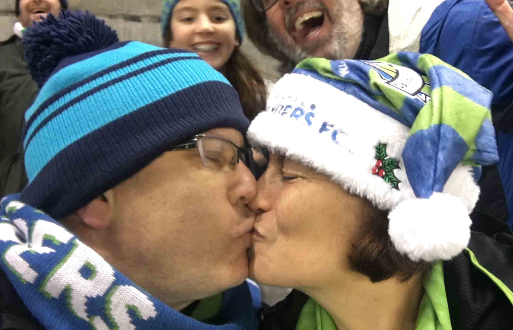

Mark, Sheila
& Kasey
Sounders Season Ticketholders
Mark and Sheila have been Seattle Sounders FC season ticketholders since 2010. Our seats are in section 313 at CenturyLink, which has an optimal view of the entire pitch and is covered to avoid the Seattle rain. We are AVID soccer fans and besides being season ticketholders for the Sounders, also have been Reign (US Women's professional league) season ticketholders for several seasons. We will attend any U.S. Men's or Women's National Team games that come to town and for a single season we attended Sounders S2 games in Renton.
Where has soccer taken us?
We have travelled the world in the name of 'futball'. Mark was able to travel to South Africa in 2010 for the Men's World Cup and had the opportunity to watch the U.S. team play. Sheila recently took a trip to Boston to visit with her brother and nephew and the three of them were able to attend a New England Revolution game. Also on a recent trip to the bay-area, so Sheila could run in the Bay to Breakers 12K, we were able to attend a San Jose Earthquakes game. We have travelled to Portland for soccer games against both the MLS Timbers, NWSL Thorns (the women's profession league), and for the NWSL final which the Seattle Reign lost to Kansas City (their second finals loss to KC in as many years).
In 2015 our summer vacation consisted of a two-week road trip to Canada for the Women's World Cup. The first week was spent in Edmonton, Alberta, for quarter-final and semi-final games. The week following was spent in Vancouver, British Columbia, where the United States Women's National Team defeated Japan in a 5-2 thrashing.
In December of 2016 we made a vacation of our trip to Toronto (yes it was winter-time and COLD!) for the MLS Cup between Seattle and Toronto. The Canadians are the nicest, kindest, and most hospitable people in all of North America. Sadly to say their kindness was rewarded with the Sounders coming away with a victory for their first MLS championship. The same two teams will compete in 2017 for the MLS Cup again, in Toronto, on December 9.
Rituals & Traditions
We have several traditions and rituals when it comes to the Sounders and their games.
- Gotta dress the part, which includes doing up the hair and tatoos. Sheila usually gets her hair and tatoos done at the stadium, while Mark does them on his own at home.
- Of course we commute down to the stadium on the 41 bus out of Northgate. We usually enjoy a crowded, but free ride on the way home.
- Dinner out at our favorite downtown restaurants, either dim sum at Harbor City or doner kebabs at Berliner.
- Kettlecorn purchased from the same vendor outside the stadium.
- A "very" passionate kiss after each Sounder goal!

Lastly - who is our little friend?
Kasey is our "baby". He is a cockapoo pup who was named after Kasey Keller, a well-respected Sounders original. Our Kasey was born on June 3, 2015. We were able to introduce ourselves to him on our way back from Canada and the Women's World Cup victory in 2015. Kasey has been a wonderful companion and has become a big part of our family.